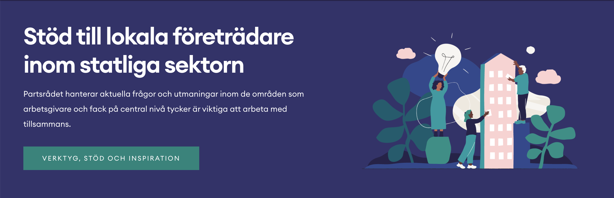
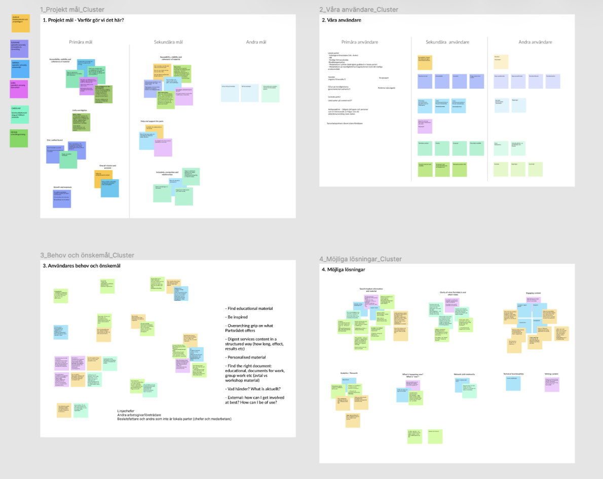
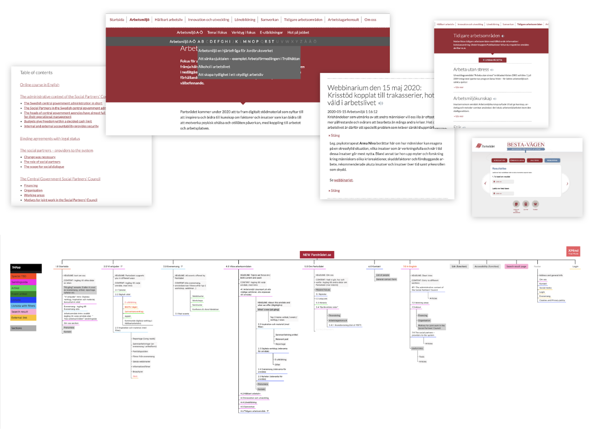
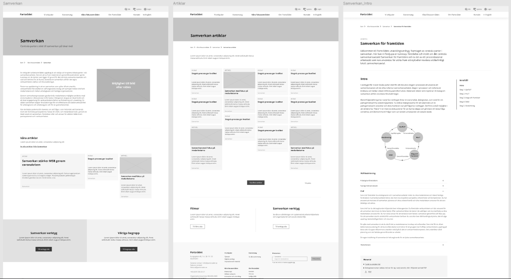

Unifying & simplifying a key governmental website
The Social Partners' Council (Partsrådet) is a non-profit organisation funded by state agencies in cooperation with unions. Their mission is to support social partners in the workplaces for the Swedish government sector, consisting of about 250 agencies and organisations.
UX lead on a full redesign for a Swedish government organisation, restructuring content and navigation across a complex environment.

As UX lead I was involved from the earliest strategic conversations all the way through to implementation. Over five months I worked closely with all parts of the organisation running workshops, interviews, and weekly concept-testing sessions. This process helped breaking down internal silos and aligning teams around a shared vision.
The role required full proficiency in Swedish to communicate effectively with both users and internal stakeholders across a politically sensitive government context.
The project opened with a deep-dive into the organisation: what Partsrådet actually does, what it offers, and how it operates internally. Understanding those dynamics was essential before any design work could begin. After this early deep dive, the core pain points emerged: a navigation system with clear usability problems, scattered content, and internal language that didn't speak to users.
Main activities
- Effect mapping workshops
- Site audit
- Interviews

With both user and stakeholder needs mapped, the next step was to translate insights into a clearer and more scalable structure. I focused on rethinking the site from the ground up: how information should be organised, how navigation could better support user needs, and how the overall content hierarchy could become easier to understand. Low-fi wireframes were used early on to explore different directions and validate ideas quickly.
Main focus areas
- New sitemap and navigation across the site
- Rebuilt IA and taxonomy from the ground up
- Early concepts and lo-fi wireframes to validate and iterate

I held regular prototype testing with both clients and real users. Working collaboratively with developers, I also built out the main component library and design system. At the end of the project, the new site matched the organisation's ambition to be accessible and approachable.

What I did
Led UX end-to-end. From strategy workshops and user interviews to a full redesign of the site's structure, navigation, and content.
The challenge
A siloed organisation, bureaucratic language, and years of accumulated content made for a site that was hard to navigate and harder to trust.
The outcome
A unified, clearer experience with offerings, contacts, and content all easy to find for the first time.
User research
Wireframes
Component Library